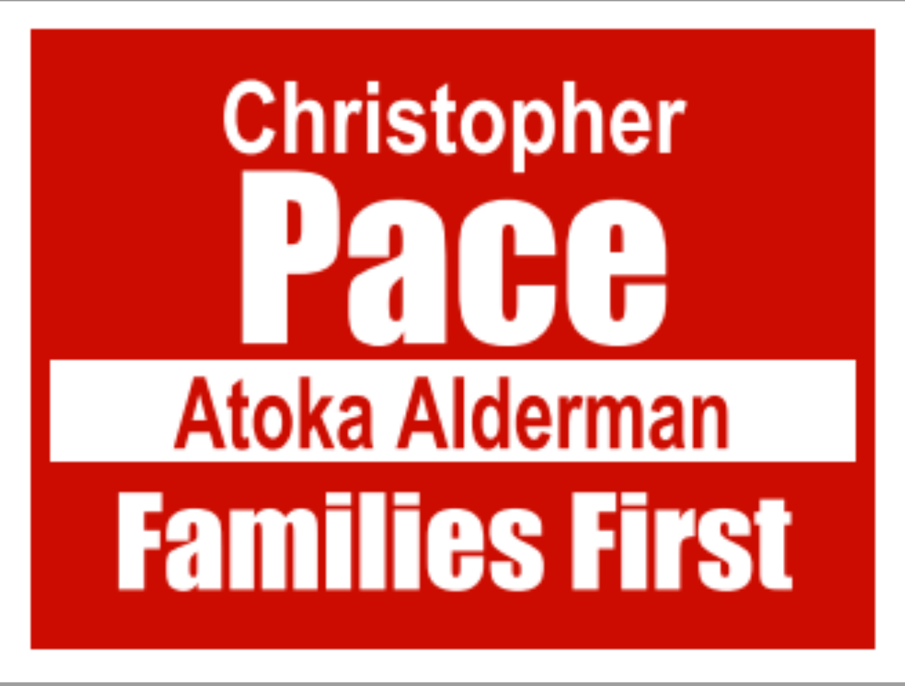

As much as I would like to get on here and make a lot of promises of what I will do.
I can't do that. However, what I can and will do is make 3 promises to ALL voters of Atoka.
I promise to fight to fix any issue that is brought to the attention of the board. It's not always an overnight fix, but we can't let issues just be swept under the rug and left alone anymore.
I promise to be as transparent as legally allowable. As many people know, you can't talk about ongoing legal actions, but many other issues that can be talked about, I will answer questions to the best of my abilities. If I don't know an answer, I will do my best to find one and contact you.
I can’t do anything about taxes raising this year. However, I can promise to always try to avoid raising taxes. I want to be able to draw other businesses in and retain the ones we have now.
Nothing states taxes will stay this way or even must raise again. If the town can draw more businesses like Kroger to off set sales taxes with property taxes, property taxes can be assessed back down (Kroger is the perfect example of this. In 2008 the town reassessed taxed from 56 cents per thousand to 55 after Kroger started generating sales tax dollars in our limits.)

Learn more about me here